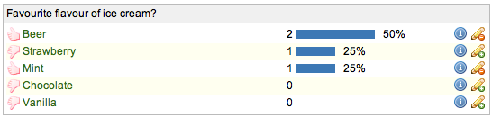
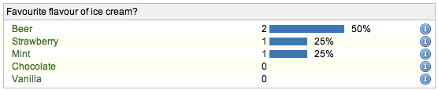

Poll Plugin for JIRACreated by Henri Yandell at SourceLabs, Inc. Download: plugin jar, peruse source zip or check out svn. |  |
Released under the Apache License 2.0 and Copyright 2007-2008 Henri Yandell/SourceLabs, Inc.
This project uses the excellent famfamfam.com Silk icons.
I realized that the JIRA voting mechanism provides site admins with the model needed to setup basic polls. All that was needed to finish the job was the interface. This portlet provides said interface and it's expected that this portlet will be of use in all JIRAs for a myriad of lateral thinking reasons.
Version 1.2 was released on 20th of February 2008. There was the one bugfix:
Version 1.1 was released on 13th of May 2007. It (very quickly) added the feature to be able to dilute votes so that a user only gets 1 vote to share around and not one vote per issue.
Version 1.0 was released on 13th of May 2007.
Install the plugin by downloading the plugin jar, place it in your $JIRA/WEB-INF/lib/ and giving your JIRA a restart.
Once it's installed you can add it to your dashboard by selecting the Poll portlet. Please follow the instructions from Atlassian for configuring your personal dashboard or the default dashboard.
The source is available for perusing by downloading the source zip and unpacking.
The first of three configurations is a comma-separated list of issue keys who will form the elements of the poll. If you just specify one issue key then its subtasks will be used.
The second configuration is the title for the poll. If you have specified just the one issue key then this is optional - the summary of the parent issue will be used if the title isn't specified.
The third and last configuration is whether to consider users as having many votes or just one vote. If they have just one vote (the default from 1.1 onwards) then their vote is shared between the issues they vote on. So if a user votes for two issues, each issue gets half a point.
The current plan is to add the following ideas:
Please mail these to me at bayard-at-generationjava.com, or add them as comments to the JIRA plugin page.
There are two modes for the portlet. Logged in users see the following (also at the top of this page):
The information icon takes the user to the page for that issue, the thumb shows whether the user has voted for this issue and the pencil icon is used by the user to vote for an issue or remove their vote.
The difference for anonymous users is that they don't get access to a few of the icons:
